Merhaba Ben Burak!
Şu anda 20 yaşındayım. Kendimi bu sektörde geliştirmek için her gün çalışıyorum. Aslında bu sektöre girmeden önce, buraya nasıl geldiğimi anlatmak istiyorum.
Bilgisayarla tanışma serüvenim 6 yaşında başladı. O zamanlar hep oyun oynar veya video izlerdim. 10. sınıfa kadar bu şekilde devam etti. Ancak 10. sınıfta, ekim ayında bir Discord sunucusuna katıldım. Orada Batınay ve Ramazan ile tanıştım. Onlar beni bu alana yönlendirdi ve "Boş boş pandemide oturacağına programlamaya başla." dediler.
Zaten üniversitede bu alanı seçecektim, bu yüzden erkenden başlamanın iyi olacağını düşündüm. Bu, programlamaya attığım ilk adımdı. O zamanlar sadece Java ile Minecraft modları yazıyordum, ama bir yandan da C++ kullanarak programlama dillerini keşfediyordum. (İlk büyük projem, C++ ile bir web sunucusu geliştirmek oldu.)
Sonrasında 12. sınıf oldum, YKS'ye başladım ve hazırlık yılı derken baştan Gençay Yıldız hocamın C# videoları ile yazılıma tekrar başladım. Sonrasında HTML, CSS, TypeScript, Angular, .NET vb. teknolojilerle kendimi geliştirmeye devam ediyorum. Amacım backEnd developer olarak ilerlemek.
Eğer bana hızlı bir şekilde ulaşmak istiyorsanız, Discord üzerinden daha hızlı yanıt alabilirsiniz! (Discord ID: Burakuslendera)
